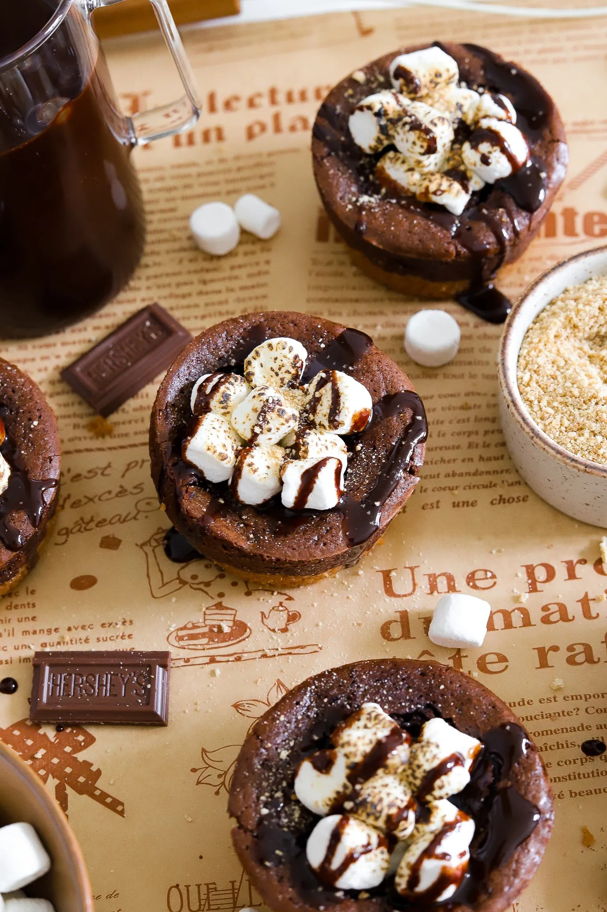

Dessert
Smores Brownie Bites
Did you know you can take packaged brownie mix and turn into a
delicious smores fusion dessert? Nobody will ever guess you didn't
even make the brownies from scratch after the first bite. Easy,
delicious, and fun to make!
PREP TIME: 30 MINUTES COOK TIME:
20 MINUTES
TOTAL TIME: 1 HOUR
YIELDS: 12 BITES
INGREDIENTS
- 18 ounce package brownie mix (I used Ghirardelli)
- 1/3 cup vegetable oil
- 1/4 cup whole milk
- 1 large egg
- 1 cup crumbled graham crackers
- 5 tablespoons unsalted butter, melted
- 1 1/2 cup mini marshmallows
- hot fudge sauce, optional
INSTRUCTIONS
- Preheat oven to 350°F.
-
Prepare the brownie batter according to package directions but
instead of water, substitute with equal parts whole milk.
Add the milk, egg, and vegetable oil to the brownie mix and use
a rubber spatula to incorporate until you have a thick batter
consistency.
-
To a food processor, add the graham crackers and blend until you
have a sand-like consistency. Transfer to a bowl, add the melted
butter, and mix together well.
-
Using a non-stick cupcake tray, add 1 to 2 tablespoons of the
graham cracker mix to each cup. Press down well to form a
crust.
-
Add a dollop of brownie batter on top so each cup is now around
2/3 full to the top.
-
Transfer to the oven and bake for 12 to 15 minutes until the
brownies are set in the middle.
-
Use a spoon or any small round surface like your finger to make
a small indent in the center.
-
Add a few mini marshmallows in the center and use a torch to
toast them.
-
Optional, add a drizzle of hot fudge sauce on top and a sprinkle
of graham cracker crumbles to enjoy!